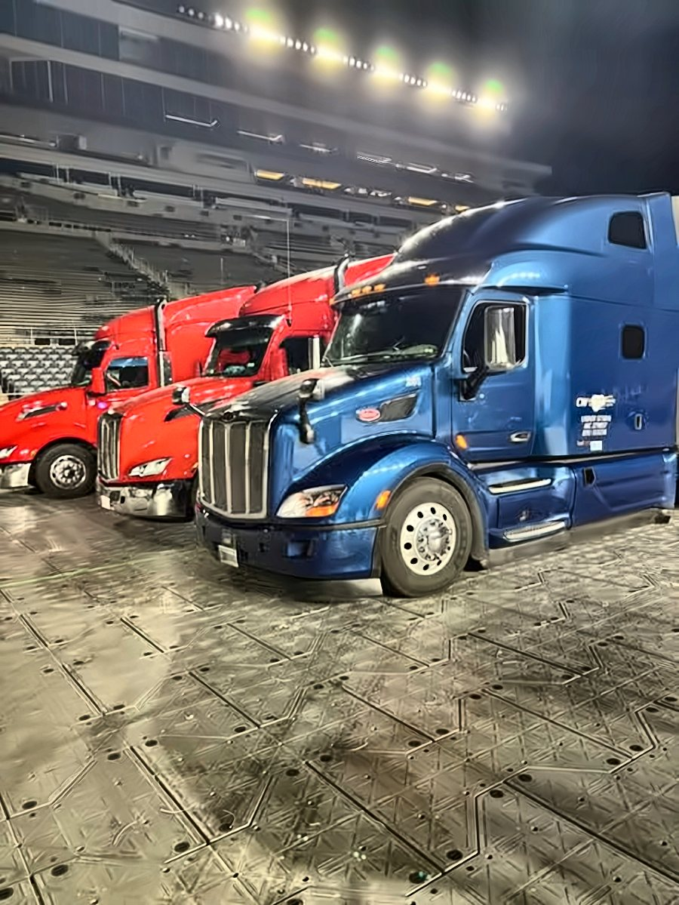

On the road
CW power at work



One call puts a CW tractor and a professional CDL driver on your trailer. Loaded or empty, a single move or a standing lane, we pick it up where it sits and set it where it needs to be, anywhere in 49 states and every Canadian province.
Power only keeps your trailers moving without the cost of running your own tractors and drivers.
Tell us where the trailer sits, where it goes and when. 574-288-2783 or Rodney@Tourtrucks.com.
Our dispatch team lines up a CW tractor and a professional CDL driver for your pickup.
Your trailer rolls with an update every day between 9:00 and 12:00 ET.
Delivered where you need it, and the tractor heads back out. Your trailer never left your control.
Trailers you load at your own dock, taken to your customer, warehouse or venue.
Empties moved to where the next load is, so the pool stays balanced.
Trailers delivered to lessees or brought back to the yard when the term ends.
Production, hospitality and merchandise trailers handled with care for tours and events.
Power for generator units, ice floor trailers and winter sports gear going venue to venue.
Generators, chillers, mobile medical units and command centers, moved since 1995.
Tours and live events: see Tourtrucks.com → · Power only guide at PowerOnlyTrucking.us →
Owned and run by Rodney and Christi McDonald, with an office team that has been here for decades.
CW Leasing & Transport hauls it. When volume grows, CW Logistics adds partner and dedicated carriers.
From South Bend, Indiana to every lower-48 state and every Canadian province.
EPA SmartWay Transport Partner since 2017, useful for your own sustainability reports.

With a regular truckload the carrier brings its own trailer. With power only, the trailer is yours or your lessor's, and CW brings only the tractor and the driver, so your equipment stays in your hands.
Yes. Empty repositioning, trailer pool balancing and lease returns are routine power only work for us.
Both. Call about one trailer this week or a lane you run every week, and we will tell you what we can cover.
You get an update every day between 9:00 and 12:00 ET from pickup through delivery, plus a phone that gets answered: 574-288-2783.
CW Leasing & Transport Inc runs under USDOT 573816 and MC 279857. Certificates of insurance available on request.
PowerOnly.us is a CW Leasing & Transport Inc site. CW has pulled trailers out of South Bend, Indiana since 1990, and sister company CW Logistics, started in 2001, brings in partner and dedicated carriers when a job calls for more trucks. Rodney and Christi McDonald were fortunate to buy these family businesses and keep them rolling.
Over more than 31 years the team has learned that the hard part of power only is not the pulling, it is answering the phone when plans change. That is why last-minute, surprise and immediate-need moves for tours, sports and live events are everyday work here. CW is an EPA SmartWay Transport Partner since 2017. The rest of the story is at Tourtrucks.com.
"When you prepare for the unpredictable, chaos is just another tool in your arsenal." — Rodney McDonald, President

President, CW Leasing & Transport Inc and CW Logistics
Rodney McDonald opened his first company at 20 and learned Murphy's Law the hard way: anything that can go wrong, will. What matters is how you handle the problem and how you plan for the unknown. For more than 31 years he has handled last-minute, surprise and immediate-need transportation for sports and entertainment. CW Leasing & Transport (est. 1990) and its sister company CW Logistics (est. 2001) are family businesses that Rodney and Christi were fortunate to buy and carry forward. Under his leadership, CW has been an EPA SmartWay Transport Partner since 2017. His motto: "When you prepare for the unpredictable, chaos is just another tool in your arsenal."

Vice President, CW Leasing & Transport Inc and CW Logistics
Christi McDonald is one of the founders of the business and has worked in trucking since 1995. She started out sending letters on a typewriter. Over the years she worked her way up to running 180 trucks on a Sunday-night load-in, and today she helps keep the company running like a well-oiled machine. Christi has been Vice President of RPM-CLM Family Enterprises since 2004, and Vice President of CW Leasing & Transport Inc and CW Logistics since 2016. She encourages every customer and driver to reach out to the team for anything they need. Her faith in God and her commitment to family guide everything she does, and she brings that same care to the CW family of employees, drivers and customers. Outside the office, she supports local animal rescue, including The Meow Mission.

Dispatcher
Kyra Lash joined CW Leasing & Transport Inc as a Dispatcher in August 2026, "trading lab coats for logistics." A gifted learner from an early age, she began taking pre-college courses at Northwestern University's Center for Talent Development at age 10, studying engineering, pre-law, mathematics and theater arts. She started her associate degree in biology at Ivy Tech Community College as a junior in high school and finished it at 19. At 21 she earned her bachelor's degree in biology from Purdue University. She then spent three years as a medical laboratory technician and scientist with Alverno Laboratories and Northwest Cancer Centers. This isn't her first time at CW: starting her freshman year of high school, she worked at the company during breaks from school and college. Today she handles morning check calls, enters and dispatches tour loads, and works with tour logistics partners on rates and driver pay. Kyra also danced competitively, starting at age 3.

Office Manager
Crissy Bolinger has been Office Manager at CW Leasing & Transport Inc since September 1997, making her one of the longest-tenured members of the team. She keeps the office side of both CW Leasing & Transport Inc and CW Logistics on track. She handles daily receivables reporting and company account reconciliation, works with the company's outside accountants each month, and manages the electronic logging system. When drivers' pay or paperwork needs sorting out, Crissy is the steady hand behind the scenes. She is a graduate of Floyd Central Junior-Senior High School.

Fleet Specialist
Darlene Fisher has been a Fleet Specialist at CW Leasing & Transport Inc since November 2015. Her day starts with morning check calls, using live truck locations to keep every load's status current. She answers phones, dispatches drivers, sets up new customers, and keeps fleet records and reminders up to date. When a truck or trailer needs attention on the road, Darlene coordinates the repair so drivers can get moving again. She is often the first friendly voice customers and owner-operators hear when they call. Before joining CW in 2015, she worked for RPM-CLM Family Enterprises from 2002 to 2005. She is a graduate of Washington High School in South Bend. Her late husband, Bruce, was a mentor to Rodney and Christi McDonald from 1996 through 2006 and an integral part of the company's success.

Dispatch & Account Representative
Kathleen "Kathy" Czajkowski brings 26 years of dispatch and account representative experience, including towaway and RV dispatch and quoting loads. Over her career she has also dispatched moving units for the U.S. Border Patrol, the FBI and other government agencies. At CW Leasing & Transport Inc she matches power-only trucks to tour and event loads. Each day she sends customers updated lists of where trucks are available, and she keeps track of driver availability across the country. Kathy holds an associate's degree in Accounting & Data Processing from Davenport College. A dependable, outgoing people person with great communication skills, she helps keep trucks loaded and customers informed.

Billing Department
Karen Jankowski runs billing for CW Leasing & Transport Inc and CW Logistics. Every morning she sends out the accounts receivable aging report. Throughout the day she handles invoicing, credit memos, fuel reports and outside carrier payments. Karen carefully checks each rate sheet against the final invoice so customers are billed accurately and carriers are paid on time. Her careful work keeps the financial side of every move clean and clear, and she has helped train newer team members on the billing process.

Sales
Yvette Hartman joined CW Leasing & Transport Inc in sales, working remotely from the Chicago area. She focuses on entertainment, tours, live events and trade shows. She began in shipping and receiving, then booked loads for a third-party logistics firm. From 2016 to 2023 she worked as an independent logistics specialist, handling account management, sales, load planning, dispatching, new carrier setups, invoicing and customer service. She then spent a year and a half at Powersource Transportation as Entertainment Coordinator and Operations Manager Assistant. At CW, she has handled specialty moves across the US and into and out of Canada.
Source: FMCSA SAFER, October 2026
Source: DispatchFF Trust Scores and FMCSA records, October 2026
Email or call with the pickup spot, the drop-off, the trailer type and the date it has to move. A real person on the CW team answers and gets you a price.
CW Leasing & Transport Inc
23390 W Ireland Rd
South Bend, IN 46614
USDOT 573816
MC 279857